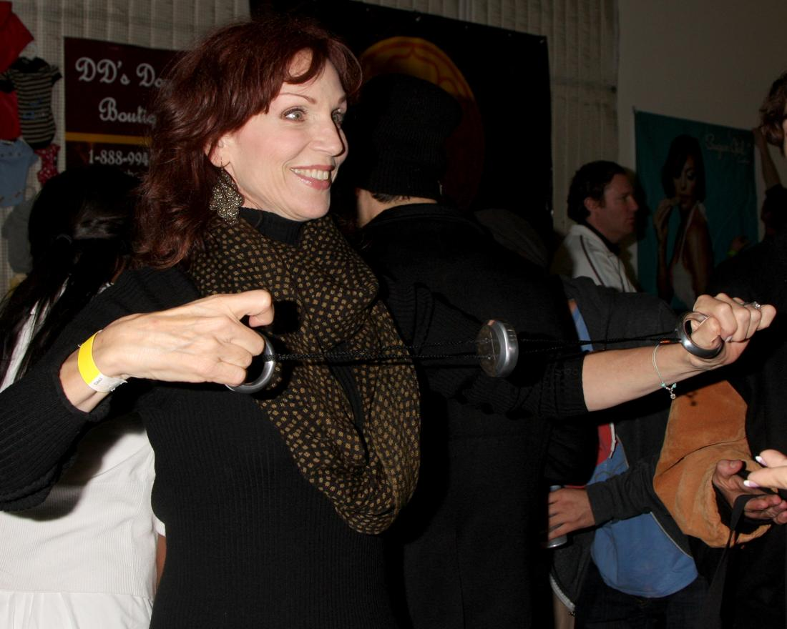

Marilu Henner
I first saw Marilu Henner on the tv series Taxi – she was so funny, so sexy and had the best chemistry with Tony Danza and Danny DeVito – classic comedy
and then got to work together on the movie based the real life incident called the Irvine Fertility Scandal.
And then several years later, yes, I got her to SpinGym

LOS ANGELES – NOV 20: Marilu Henner at the Connected’s Celebrity Gift Suite celebrating the 2010 American Music Awards at Ben Kitay Studios in Los Angeles, CA
▶ Watch the video on YouTube
Dancing With the Stars pro dancer Derek Hough is a six-time mirror ball trophy winner while his season 23 partner Marilu Henner is a five-time Emmy nominee, and together they are the ones to beat.
“I’m, like, a rabid fan,” Henner tells ET of the ABC dance competition show. “I’ve been following everybody on Dancing With the Stars for years. I know everybody, and I tweet about them.”
Despite all her studying of the show, the 64-year-old Taxi star was still surprised to learn who her partner would be.
“I had an out-of-body experience, because he wasn’t even on my radar,” Henner explains. “He was gone doing Singin’ in the Rain and Hairspray, so I didn’t even think about Derek. And then the door opens and I scream and I cry and then there’s that second of, ‘Oh my God! Did I superimpose Derek Hough’s face on somebody else who’s really standing there?’ — an apparition?!”
While the pairing is a dream come true for Henner, it’s still a lot of work. The dancing partners rehearse four hours a day and then Henner goes home and practices for an additional two more hours by herself. When you combine their work ethic to Henner’s dancing background, it’s hard to imagine anyone getting the best of this ballroom duo.

Free · live on Zoom every Sunday
The Secret Pitch Formula
Join Forbes live for the Pitch Secrets Masterclass. Over 80,000 people have learned the 7-second hook, the three pitch patterns behind $2.5 billion in sales, and how to close without sounding salesy. Free, with a gift worth $500 for registering.
Sundays, 2 p.m. PT / 5 p.m. ET. Registration and the Zoom link are at pitchsecretstraining.com.